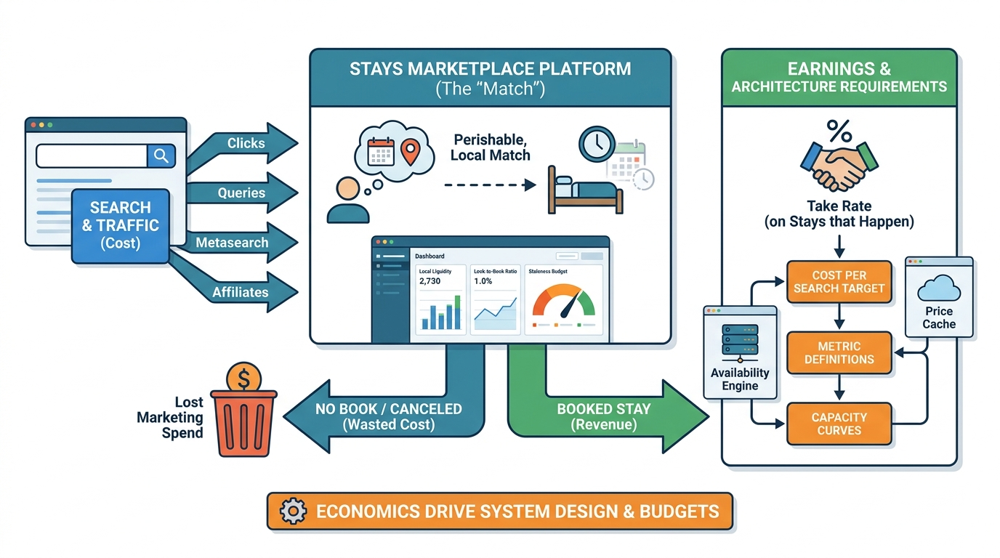

Part I — MARKETPLACE: The Business of a Night's Stay
Liquidity, Take Rates and Look-to-Book: The Economics of Stays Marketplaces

Image generated by Google Gemini (gemini-3-pro-image-preview)
Part I — MARKETPLACE: The Business of a Night's Stay

Image generated by Google Gemini (gemini-3-pro-image-preview)